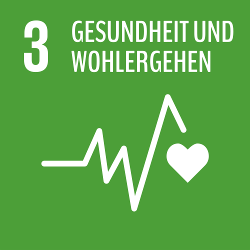

Gesundheit ist gleichzeitig Ziel, Voraussetzung und Ergebnis von nachhaltiger Entwicklung. Ihre Förderung ist ein Gebot der Menschlichkeit – sowohl in den Industrie- als auch in den Entwicklungsländern.
Weltweit leben etwa 39 Prozent der Weltbevölkerung ohne Krankenversicherung, in einkommensarmen Ländern sind es sogar mehr als 90 Prozent. Immer noch sterben viele Menschen an Krankheiten, die bei richtiger Behandlung nicht tödlich verlaufen müssten oder durch Impfungen einfach zu verhindern wären. Durch eine Stärkung der Gesundheitssysteme und insbesondere durch eine breite Verfügbarkeit von Impfstoffen, kann es uns gelingen, diese Krankheiten bis 2030 zurückzudrängen und sogar auszurotten.
„Es ist Zeit, Gesundheitsfürsorge als Teil einer ’sozialen Infrastruktur‘ zu konstituieren, die Gesundheit als ein öffentliches Gut begreift, das allen verfügbar sein muss.“
(medico international)
